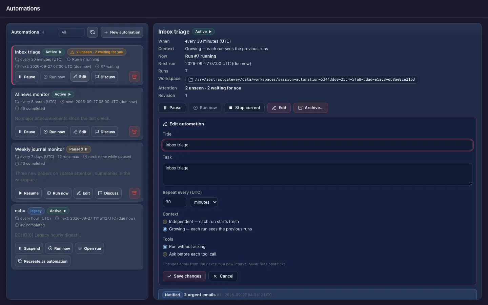

Start as an automation owner
Hand recurring checks, digests and reports to an agent. Each automation runs on the gateway at a fixed interval or on request, keeps every run as a readable chat turn, and speaks up only when a run needs you.
Install, try it, make it yours
Install and set a model 20 min
curl -LsSf https://abstractframework.ai/install.sh | shFinish the first-run guide with a model that fits (or a cloud provider). Automations run unattended, so pick a model that answers reliably; a tick takes as long as your workflow does.
Create your first automation 10 min
Open the Observer from the console’s Apps page. Choose Launch, switch to Automate, pick Gateway default, and write the task:
Check the free disk space on this computer and report it in one line.Set Repeat every 30 minutes, Independent context, tools run without asking, then Create automation. Already chatting in the Assistant? Its clock button, Schedule this conversation…, creates the same kind of automation from the conversation.

Read it like a chat 5 min
The Automations page shows each run as a trigger turn and an answer turn. Run now fires one immediately: the schedule does not move, it does not count toward a run limit, and it works while paused. Open run ledger shows every step the agent took.
Decide what deserves your attention 15 min
Results are quiet by default. You are notified when a run fails after its last retry, when it waits for you, or when the workflow’s output carries notify. To alert on a threshold, publish a small workflow in Flow that returns {response, notify}; the gateway decides from that field, never from the wording of the answer.
Manage it from anywhere 10 min
Pause, resume, run now, stop the current run, edit (title, interval, context), archive, or Discuss a result in a forked chat, from the Observer, the Assistant’s Automations tab or AbstractCode:
/automations # in the AbstractCode terminal client
/schedule <task> # create one from the current workflowThen make it yours
Market watch (growing)
"Search the web for the current price of <a share> and report it with the change since the previous check." Every 5 minutes, growing context: each tick sees the previous ones.
Memory monitor (independent, notify)
A workflow that runs memory_pressure (a macOS command) and returns notify: true only under a threshold. Every 2 minutes; silent until it matters.
Weekly report you can question
Every 7 days, summarize the week’s changes in a folder. When a report surprises you, Discuss it: the new chat sees the automation’s history and can read its files, without changing them.
Worth knowing
7d.